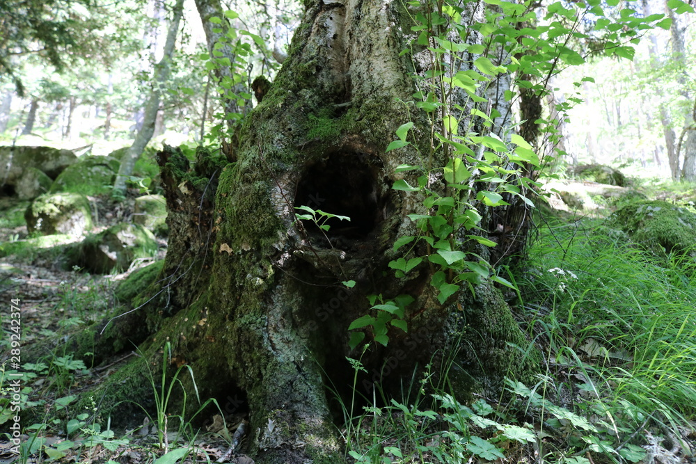

Decides que ya has arriesgado suficiente. Tu cuerpo está cansado y la madriguera que el cuervo te mostró es perfecta. Protegida, segura, con buena vista del territorio.
El cuervo grazna una vez más, como despidiéndose, y vuela hacia el horizonte. Quizás tenía algo más importante que mostrarte, pero nunca lo sabrás.
Los días pasan. Aprendes a cazar pequeñas presas, encuentras agua cerca, y tu madriguera se vuelve tu refugio. No es una vida emocionante, pero es una vida tranquila.
A veces, en las noches, piensas en tu cuidadora. En cómo te salvó, en cómo te enseñó a ser fuerte. Te preguntás si ella estaría orgullosa de vos, o si esperaba que fueras más valiente, que exploraras más allá.
Pero estás vivo. Estás a salvo. Y después de todo lo que pasaste, tal vez eso es suficiente.
Elegiste la seguridad sobre la aventura. No hay nada de malo en eso. Sobreviviste cuando muchos no lo habrían hecho. Encontraste un hogar y aprendiste a vivir por tu cuenta.
Quizás algún día te aventurarás más lejos. O quizás no. Por ahora, esto es suficiente.